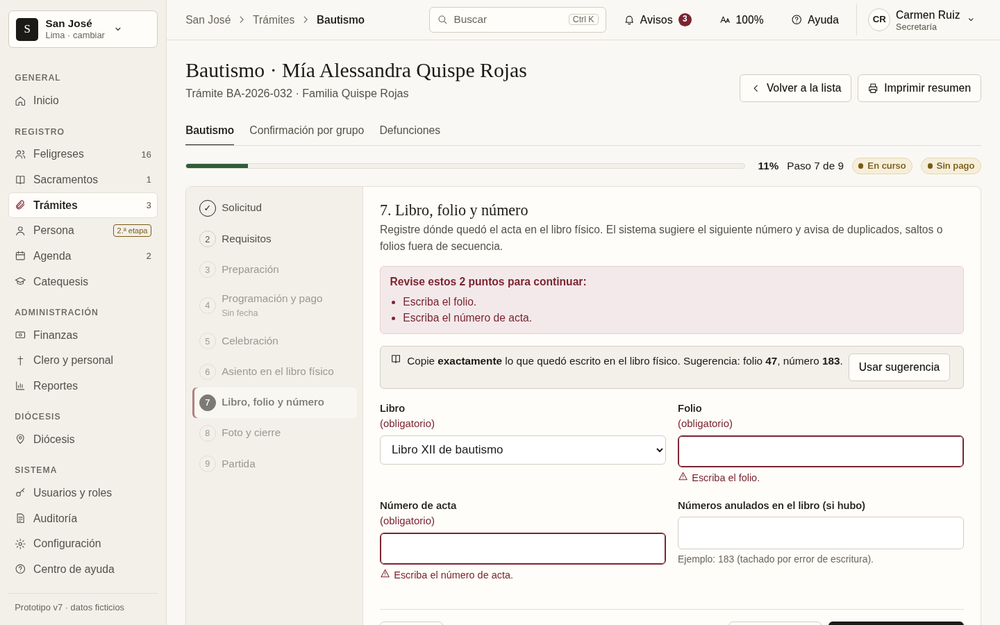
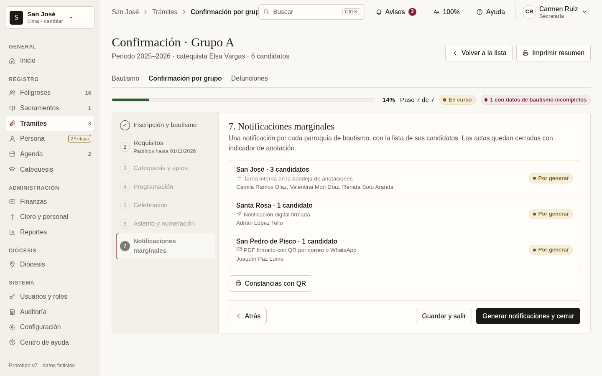

✝ Sistema de gestión parroquial — prototipos (maqueta no funcional, datos ficticios)
v7 · Procesos del documento de ideas · abrir prototipo
Basado en v6 completo. Solo lo aprobado/validado del documento; sin digitalización por imagen ni traslado de feligrés.
Índice de pantallas (nuevo en v7)
- Trámites paso a paso: bautismo (9 pasos), confirmación por grupo (7), expediente matrimonial oficial (9), con reporte imprimible → asiento en el libro físico → registro manual de libro/folio/número (sin sugerencias ni cálculo)
- Sacramentos: bandeja de notificaciones marginales (lote y por contrayente, estados, respuesta con observación), licencias entre parroquias (emitida sin enviar, enviada, pendiente de devolución, devuelta), carga desde Excel
- Clero: línea de vida (laico, seminarista, órdenes, cargos, episcopado, convenios) y carnet con QR
- Diócesis: mapa de territorios con «¿Dónde estoy?» y año, fichas de parroquia con línea de vida, comunicados y solicitudes a la curia
- Curia: aprobaciones (cuatro ojos, decreto), comunicados con plazos, recordatorios y reapertura
- Pagos: Yape/Plin simulado con QR ficticio, recibo con QR
- Otros: roles y permisos por grupo, defunciones simplificado, vista Persona (segunda etapa)

Bautismo · libro, folio y número ingresados a mano (sin sugerencias)
Confirmación · notificaciones en lote por parroquiav6 · Panel de administración sobrio · abrir prototipo
Índice de pantallas (v6 completo)
- Generales: login, recuperar contraseña, panel de inicio, notificaciones, búsqueda Ctrl K, ayuda contextual, zoom, perfil, contraseña, preferencias, cambio de parroquia, vista Curia
- Feligreses: personas, familias, ficha con pestañas, alta/edición validada, posibles duplicados, fusión lado a lado, importar Excel
- Sacramentos: actas (asistente por sacramento), notas marginales, anular/rectificar, partida con sello y cobro, libros (abrir/cerrar), expedientes matrimoniales, solicitudes entre parroquias
- Agenda: calendario mes/semana/día, intenciones con pago y recibo, lista por misa, horarios, reservas con choques, calendario litúrgico, avisos WhatsApp/correo
- Catequesis: grupos, niveles, catequistas, inscripciones, asistencia por sesión, seguimiento y paso al sacramento
- Finanzas: caja diaria (apertura, arqueo, cierre), ingresos/egresos con recibo, aranceles y categorías, bancos y conciliación, presupuesto, aportes a la Curia, reportes
- Clero y personal: clero, nombramientos, traslados, licencias con alertas, personal laico
- Reportes: panel por periodo, anuario estadístico, exportaciones
- Usuarios y auditoría: usuarios, matriz de permisos, permisos por parroquia, respaldos, registro de cambios con antes/después
- Configuración: datos de la parroquia, logo y sello, firmas, centro de ayuda
Completo · escritorio 1440x900
Completo · móvil 390x844
Responsivo · escritorio 1440, tableta 820, móvil 390
Pantallas 1280x800
v5 · Propuesta minimalista editorial · abrir prototipo
v4 · Nuevas estructuras de interfaz
Nuevas propuestas visuales (v3)


 full-d-vacio
full-d-vacio